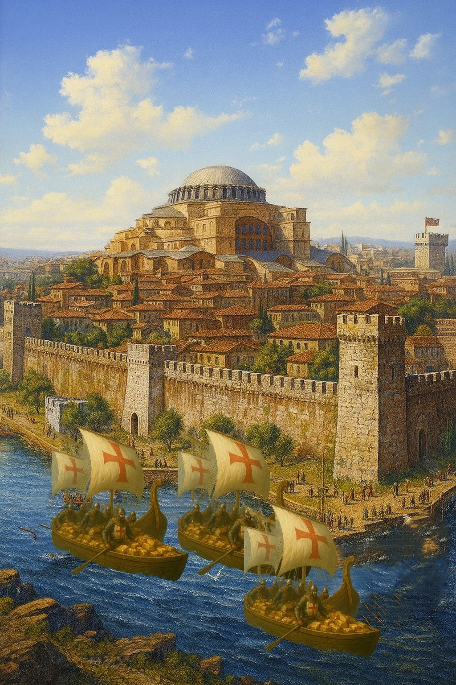
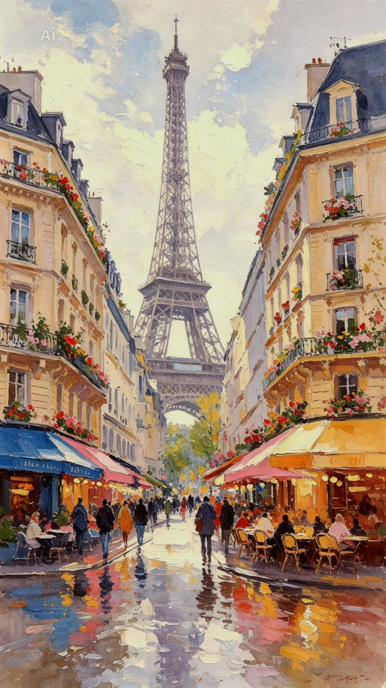
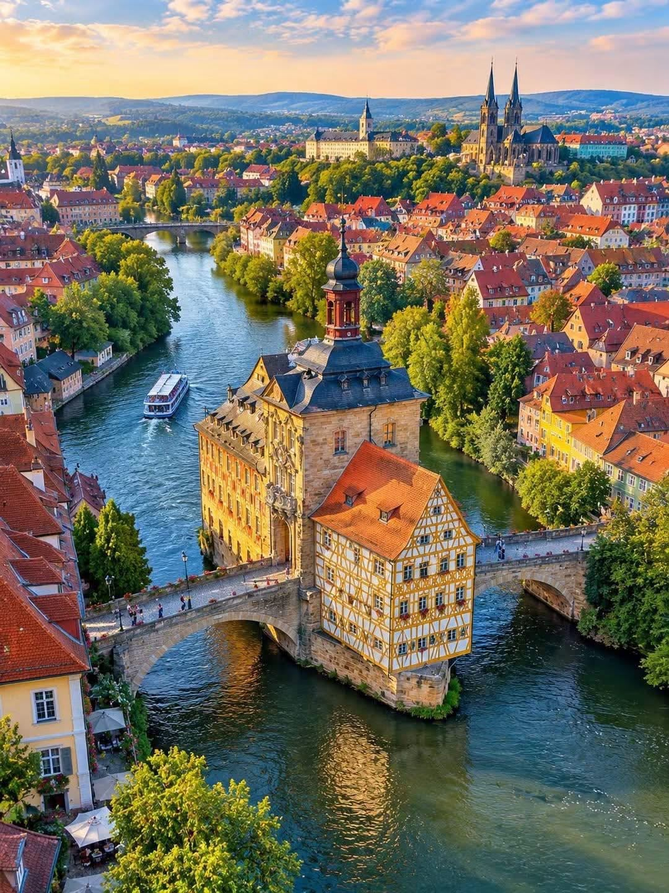

Contexto Histórico & Significado
Pilares Jurídicos Fundamentais
Legado para o Direito Moderno
Trabalho de História do Direito (Unimar): uma imersão interativa nos mais de dois milênios de história jurídica europeia. Da filosofia da justiça grega e da técnica do Direito Romano à formação da Civil Law, da Common Law e aos desafios do Direito Contemporâneo.

529–534 d.C. Ilustração · ConstantinoplaA maior codificação da Antiguidade (Codex, Digesto, Institutas e Novelas). Preservou o saber romano e tornou-se a matriz perpétua da Civil Law.
A pedra fundamental do Devido Processo Legal (Cláusula 39) e da legalidade tributária (Cláusula 12), freiando o arbítrio régio pela lei da terra.

1804 Ilustração · ParisO paradigma moderno da codificação burguesa: igualdade perante a lei, propriedade privada e autonomia da vontade contratual em 2.281 artigos.

1945–1946 Ilustração · AlemanhaO nascimento do Direito Penal Internacional e superação do legalismo cego com a Fórmula de Radbruch: a justiça triunfa sobre a lei desumana.
As duas grandes tradições jurídicas moldadas no solo europeu que definem a estrutura dos sistemas de justiça em todo o mundo moderno.
| Dimensão de Análise | Tradição Civil Law (Europa Continental) | Tradição Common Law (Inglaterra e Gales) |
|---|---|---|
| Origem e Matriz Histórica | Direito Romano justinianeu redescoberto em Bolonha (séc. XI), fundido com o Direito Canônico e costumes germânicos (Ius Commune). | Conquista Normanda de 1066 e a unificação da jurisprudência sob as cortes reais centralizadas (Curia Regis) em Westminster. |
| Fonte Primária do Direito | A lei escrita e códigos sistemáticos emanados pelo Poder Legislativo soberano. | Os precedentes judiciais vinculantes (Case Law / Stare Decisis) e costumes imemoriais do reino. |
| Papel do Magistrado | Aplicador e intérprete da lei geral e abstrata. Historicamente concebido como a 'boca da lei' (bouche de la loi). | Revelador e criador vivo do direito ('judge-made law'), cujas decisões constroem a própria regra aplicável a casos futuros. |
| Método de Raciocínio | Dedutivo: parte da norma legislada geral e abstrata para o enquadramento do caso concreto (subsunção). | Indutivo: extrai a regra geral (ratio decidendi) comparando os fatos de casos judiciais pretéritos análogos. |
| Estrutura Textual | Códigos sistemáticos e harmônicos, divididos formalmente em Livros, Títulos, Capítulos e Artigos articulados. | Coleções de acórdãos e relatórios judiciais (Law Reports), combinados com legislação pontual complementar (Statute Law). |
| Influência e Formação | Nasceu nas cátedras universitárias medievais, sendo fruto de elaborações doutrinárias e teóricas de juristas acadêmicos. | Nasceu da prática forense corporativa das corporações de advogados e juízes em Londres (Inns of Court). |
Obs.: edição, local e ano de cada obra devem ser conferidos conforme o exemplar efetivamente consultado, antes da entrega final.